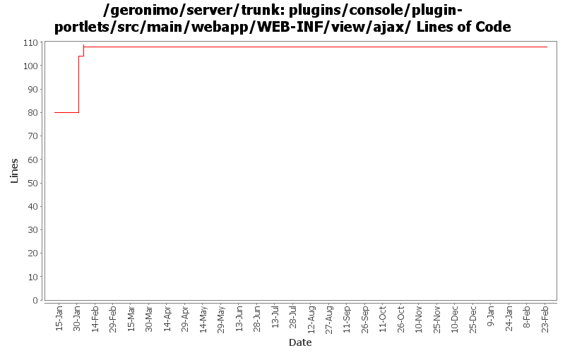

[root]/plugins/console/plugin-portlets/src/main/webapp/WEB-INF/view/ajax

| Author | Changes | Lines of Code | Lines per Change |
|---|---|---|---|
| Totals | 8 (100.0%) | 53 (100.0%) | 6.6 |
| djencks | 3 (37.5%) | 37 (69.8%) | 12.3 |
| kevan | 1 (12.5%) | 11 (20.8%) | 11.0 |
| gawor | 2 (25.0%) | 3 (5.7%) | 1.5 |
| jbohn | 2 (25.0%) | 2 (3.8%) | 1.0 |
fix broken progressbar in plugin install portlet
1 lines of code changed in 1 file:
part 4 of more cleanup of old forms (see Rev738104 for part 3)
1 lines of code changed in 1 file:
forward all dwr requests through the /console context (GERONIMO-3781)
3 lines of code changed in 1 file:
not sure how this ended up here
0 lines of code changed in 1 file:
GERONIMO-3746 Merge from branches/2.1. Patch from Joe Leong. Thanks Joe! Fixes plugin progress bar on plugin installation. Also, fixes occasional prompts for user name and password while moving from one page to the next
11 lines of code changed in 1 file:
GERONIMO-3746 apply intermediate patch from JCLeong fixing some of the plugin installer issues
37 lines of code changed in 1 file:
GERONIMO-3732 clean up resource bundles for new console plugin
0 lines of code changed in 2 files: